Proteomics Unit Experiments
NOTE: Click on any image in this document to re-size it to fill the screen. Then click it again to see the image in its original resolution.
Some experiments or studies were done in the Proteomics Unit to learn or gain a first-hand experience as to the effectiveness of certain techniques reported in the literature.
We had been having some difficulties seeing spots on 2-D gels of extracted sea sponge tissue, and we noted some irregularities with certain stains, particularly during re-use.
So we conducted some studies to look at the effectiveness of both extraction methods and use of different types of stains for the gels. We found some generally useful information which we report below.
In continuing the Bio-Rad sequential extraction, the E2 pellet is extracted with the R2 reagent to produce E3 supernatant, and repeated again on the E3 pellet to produce E4 supernatant. The R2 reagent is composed of 8 M urea, 4% CHAPS, 3-10 ampholytes, 2 mM TBP, and protease inhibitors. The E4 pellet is only extracted once with R3 reagent. The volumes of R2 and R3 for each extraction are the same as the starting R1 volume. The time of 30 minutes differs from the instructions of the Bio-Rad manual (I think they mention only 5 min rather than 30 min), but this is based on things I have read in the literature.
The guanidine extractions use 4 M guanidine hydrochloride in a 40 mM Tris base + protease inhibitor mix. This is repeated again, producing the G- E3 and G-E4 supernatants. Note that the '4' in '4G-E3' means sample #4 and not '4 M guanidine' (this is just a coincidence). The final extraction (4G-E5) is 4 M guanidine HCl + 10 mM DTT in 40 mM Tris base + inhibitors.
After fixing the gel in ethanol/acetic acid and then leaving in water overnight, the gel was first stained with previously used Bio-Rad's colloidal Coomassie G-250 stain (the “Bio-Safe” product), but it did not stain at all. The reason for this was likely because prior staining was done on gels which had not been well washed with water to remove excess SDS. Free SDS not washed out of gels after electrophoresis significantly reduces the ability to re-use colloidal G stain. The gel was then stained with fresh (i.e., previously unused) colloidal G stain prepared according to a recipe provided online from the proteomics unit at Max Planck Institute, which seemed to work well enough.
There is only one marker lane on the left. The lane identifications for 2-E1, -E2, and -E3 are certain because the staining of the lanes is clear. 2-E4 and 2-E5 and a 2nd marker lane could not be loaded because of the broken well walls.
In the images above (or possibly to the left), the proteins in the samples of sea sponge and rat tissue extracts are now stained with the fluorescent dye SYPRO Ruby. Previously used stain was used. The one gel is exposed (shutter kept open) for a little more than twice as long. This was done to reveal possibly more bands or better defined bands representing relatively lower abundance proteins.
The bands in the lanes representing rat tissue extractions (lanes marked 2-E1, 2-E2, 2-E3, 2-E4, 2-E5) of the 36 second gel compare well with the bands in the same lanes of the R-250-stained gel above. The marker lanes show distinct bands as well.
The sponge tissue extraction shows up fairly well too. Much of the protein is extracted in the R1 extractions #1 and #2 (4-E1 and 4-E2). Some extractions is seen with R2 (4E-3 and 4-E4). Very little shows up in 4-E5, the R3 extraction. We can also see a great deal of protein extracted in the first guanidine.
The extractions really need to be repeated to verify that these proteins are extracted in this way. But the SYPRO Ruby staining shows that extraction of sea sponge has promise.
The absence of vertical and horizontal streaking is noted in these same samples. This is because care was taken to centrifuge samples and to use clean/fresh electrode buffer in particular.
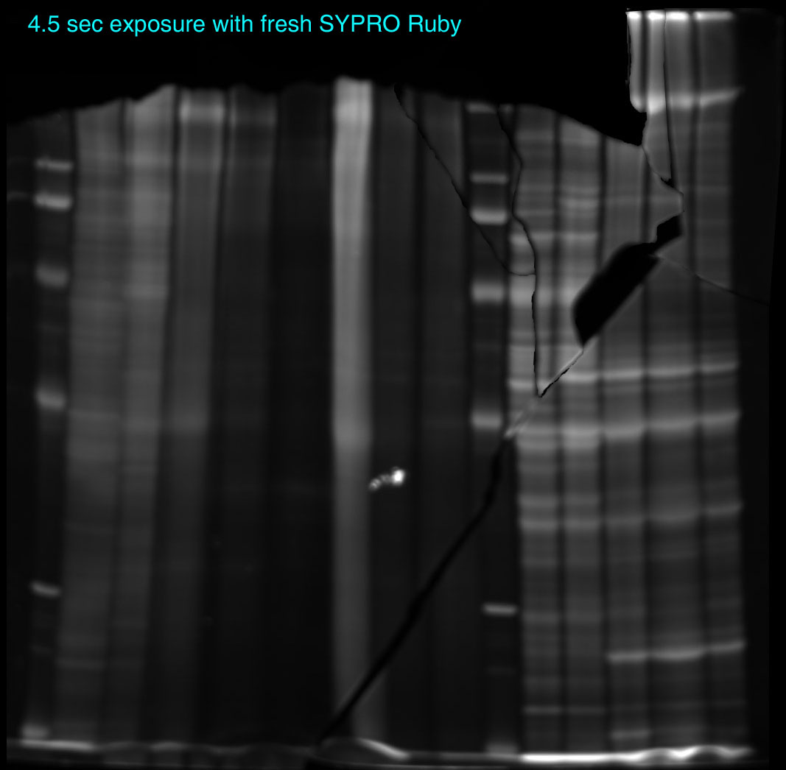
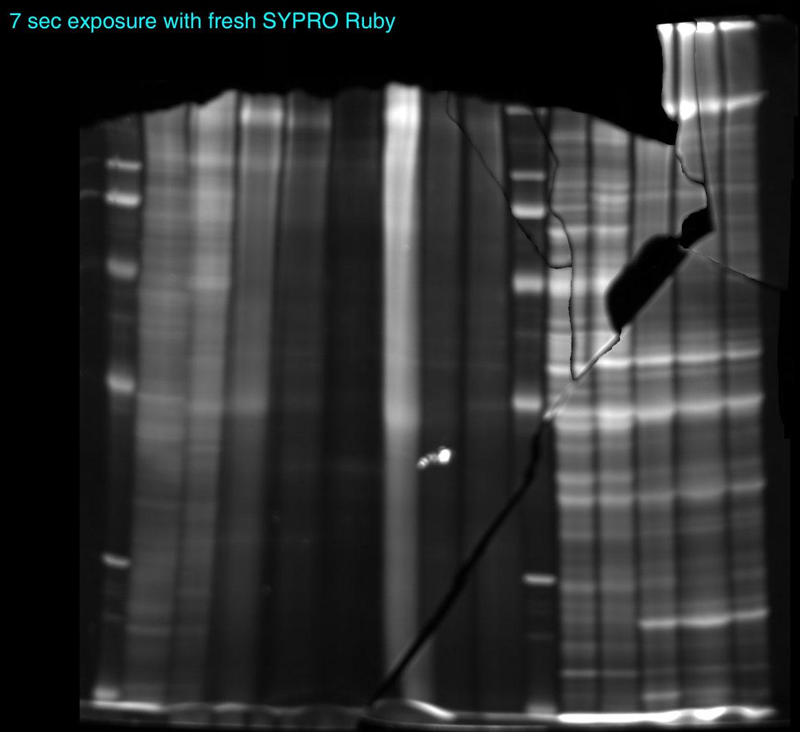
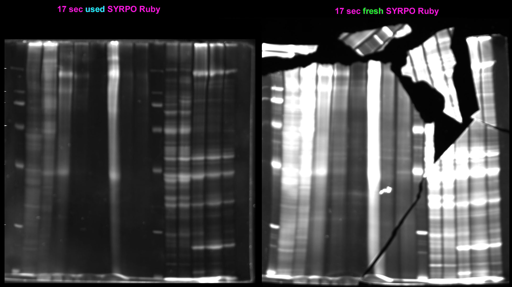
After staining with the used SYPRO Ruby, it was logical to try to stain the same gel with fresh SYPRO Ruby instead. So the gel was stained for 3 hours (according to Bio-Rad's instructions) in new SYPRO Ruby, then washed 30 min in 10% MeOH/7% acetic acid and then placed in water. The gel is shown in images above at 4.5 and 7 sec exposure. With used SYPRO Ruby, an exposure for this short a time at the camera settings used (f/2.8, or wide-open aperture) could not have possible been visualized with shutter times of 4.5 or 7 seconds. Unfortunately the gel had been broken into several pieces during this manipulation, so the pieces that could be found were imaged. The smaller pieces could not assembled on the gel, so they were re-oriented by image editing instead. Not all the pieces could be found, but most of the gel appears and provides evidence that fresh SYPRO Ruby clearly has a significant effect on visualizing the gel.
The real contrast between the effectiveness of fresh vs. used SYPRO Ruby is in the two 17 second shutter times below. While 17 seconds is barely enough to visualize the gel stained with previously used stain, it is really an overexposure of the same gel re-stained with fresh stain.
The figure at left is a multi-frame image animation (animated GIF) that shows the difference in time of exposure of the FRESH fluorescence stain. Note that the exposure time is labeled in each frame of the animation.
We will continue to examine the staining and extraction protocols and then hopefully move on to 2-D work for the sea sponge, mushroom, and so on.
For sea sponge we may need to obtain larger tissue sample, extract these by grinding in liq. nitrogen, do a two-prong extraction, and then concentrate the protein extracts, perhaps either by TCA or by centrifugal ultrafiltration.
One question was whether dyes could be used on top of one another: that is whether a gel could be re-stained with a different type of dye of the proteins had already been stained with another. For example, we were curious about whether Coomassie dye would stain proteins already stained with SYPRO Ruby, and so the broken pieces of the gel above were stained with Coomassie R-250 on a gel already stained with SYPRO Ruby (gel at below right). In the gel image the colored lines and boxes correspond to the samples studied. The boxed region in the color cyan and its lane markings correspond to sponge tissue extracted with the Bio-Rad Sequential Extraction series. It is clear that many bands show up but others do not clearly show up that were evident in the fluorescent staining. The magenta box and demarcated lines corresponds to sponge tissue whose extraction in guanidine was continued. Little to no bands appear with Coomassie staining, but the fluorescent dye staining showed little to nothing as well. In the yellow boxed area is the rat tissue samples extracted using the Bio-Rad sequence. These show clearly delineated bands although the fluorescent staining shows much more. Green arrows indicate the marker lanes.
The difference in staining could have been due the well-known inherent difference in the sensitivity of these stains, with SYPRO Ruby being very much more sensitive than Coomassie dyes. The question is whether SYPRO Ruby-stained gels interfere with Coomassie staining, and vice versa. Before doing the Coomassie stain, the gel was thoroughly put in standard 40% MeOH/10% acetic acid fixative, which generally is effective in removing SYPRO Ruby. No fluorescent image was taken, so it is unknown if the Coomassie staining eliminated the fluorescence, either because of washing out the SYPRO Ruby or quenching its fluorescence.

Staining with colloidal Coomassie Brill. Blue G-250 is complicated by lots of different formulations, some proprietary, some variations on the original method of Neuhoff et al. Among those variations is the use of different times. Some laboratories have reported that in order to visualize low abundance protein spots on 2-D gels requires staining with colloidal G for 3 to 4 days, with changing of the dye with fresh material daily!
Based on these reports, we wanted to know if the particular colloidal G stain we were using showed a difference in time of staining. The same gel was used in the staining. On the left side of the image above is the gel stained for 3 hours in colloidal G with water used to rinse out the background (the lane loading protocol is the same sponge and rat tissue samples as above). On the right side is the gel stained overnight and then again rinsed in water to eliminate background. The question is whether the observer can detect any new bands with the longer staining. Unfortunately, because the samples themselves do not show bands whatsoever, this experiment requires re-doing since the two gels do not look significantly different from one another (and thus we might conclude that 3 hours is enough, but a conclusion based on a not so ideal gel).

Using those sponge samples from above, samples were then run on a 17% SDS-PAGE gel. A major reason for doing this is because some of the 10% gels, especially the streaked ones at the top, had significant staining migrating with the electrophoresis front (the tracking dye front). This usually indicates significant protein degradation in such samples. In the gel image at left (or above left), the markers clearly indicate that this is a very dense gel (a 14.4 kDa marker running at the midlength of the gel is good proof of that). The guanidine-extracted samples provide no information (since there is no protein at all). The samples extact with Tris base only (reagent R1 in the Bio-Rad sequential extraction method) show a good even distribution of weight (at least in sample 2-E1), and thus little to no degradtion is evident here. The same is generally true for the re-extraction of E1 (namely E2) samples. 2-E3 and -E4 (the re-extraction of E3) are complicated by the presence of CHAPS and/or urea or thiourea, which distorts the lane appearance. The heavy stainin at the dye front is unlikely to be protein: Coomassie dyes do not really stain low molecular weight peptides that well. The dye could be reacting with something else present in the sample.
In the gel image at right, pure proteins were mixed and an E. coli extract provided as part of a sample kit from Bio-Rad were analyzed in preparation for 2-D gel work. The proteins were selected from what was generally available in the laboratory without any consideration of what their molecular mass was.
First the proteins were prepared individually at about 20-25 mg/ml dissolved in ultrapure water, and then aliquots of their preparation used to create a mixture (the “protein mix”). Bradford assays were done on all samples to get equivalent total protein loading. Unfortunately the protein assay results were less than ideal (glucose oxidase could not even be determined). Myoglobin (Mb) and hemoglobin (Hb) probably should not have been chosen since they are low MW proteins (polypeptide or subunit < 20 kDa) and thus out of the range of the gel. The E. coli extract shows an expected distribution; the stuff ahead of the dye front is probably due to the presence of CHAPS or urea/thiourea (or boy). This gel was done essentially as the Coomassie R-stained control.
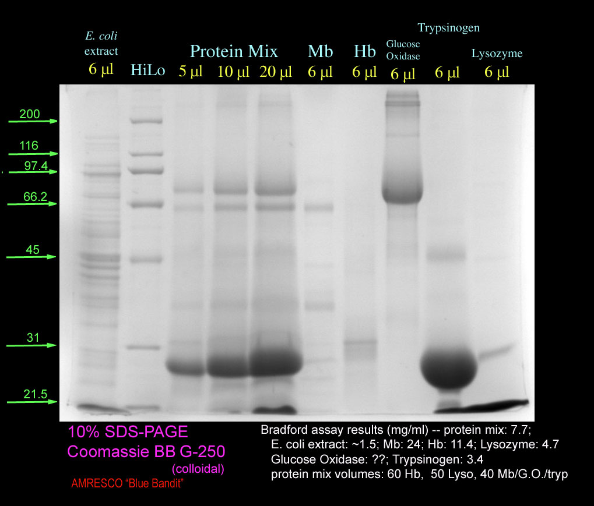

These are the test gels (above). They have the same protocol as the Coomassie R-stained gel with respect to samples analyzed. These gels are stained with colloidal Coomassie G however. The one at left was stained with AMRESCO’s “Blue Bandit” dye. The gel is washed 15 min in water (according to instructions) and then stained overnight in the AMRESCO dye. The gel at right is the same gel which was subsequently stained with the Max Planck dye (a dye known to stain effectively). This re-staining with different dye was done to see the effectiveness of the AMRESCO dye: since no bands truly emerge or increase in stained area or intensity, it can be concluded reasonably that the AMRESCO dye performs as claimed.
These 2-D gel experiments were part of a training regime, and several things were additionally learned from these activities.
Two 2-D gels in the 7 cm size were done by the trainer. One gel was given a sample that had a mixture of proteins sold as pure by Sigma-Aldrich. These proteins are listed in the table with their known or predicted pI and Mr values.
The amount of pure protein mix loaded was somewhat arbitrary. Adjustments were made for some pure protein stocks based on the 1-D gel studies above.
The other sample was of an E. coli extract sold by Bio-Rad with their starter kit for 2-D gel work. The amount of sample loaded on IEF strip was according to manufacturer directions. It is reported to have a 1.35 mg/ml protein concentration (the Bradford shows 1.7 mg/ml without accounting for interferences).
 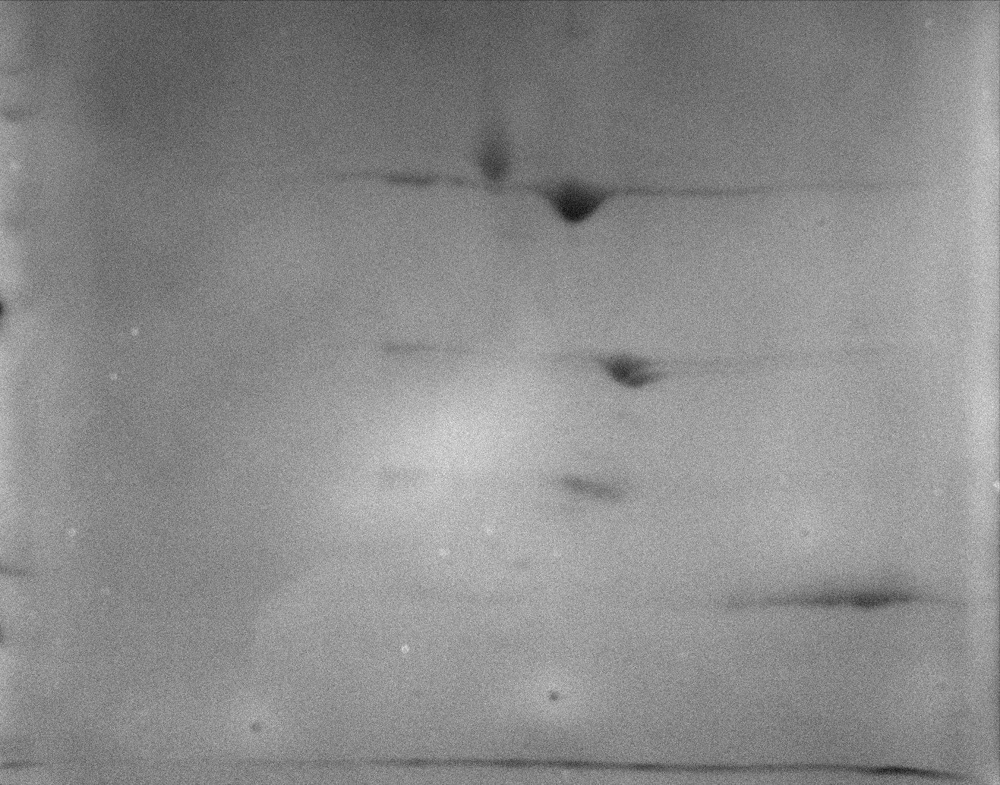
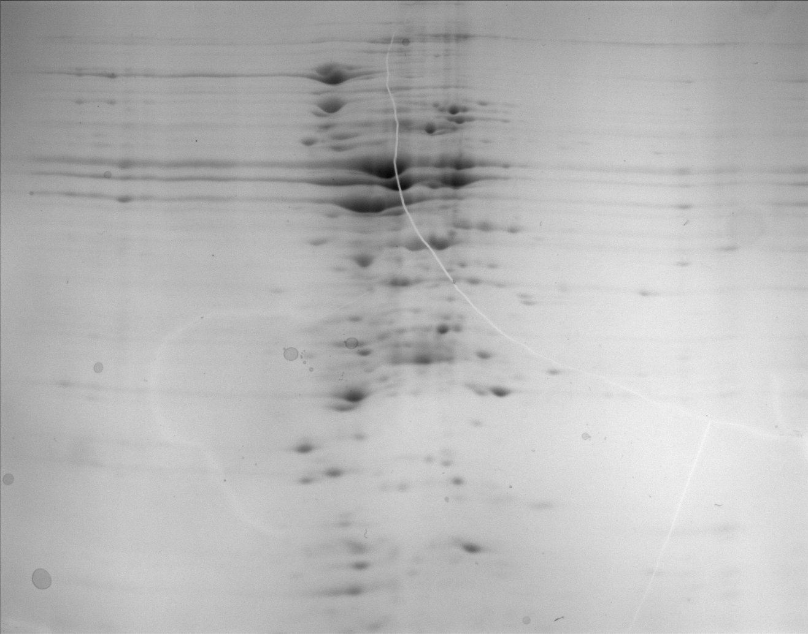
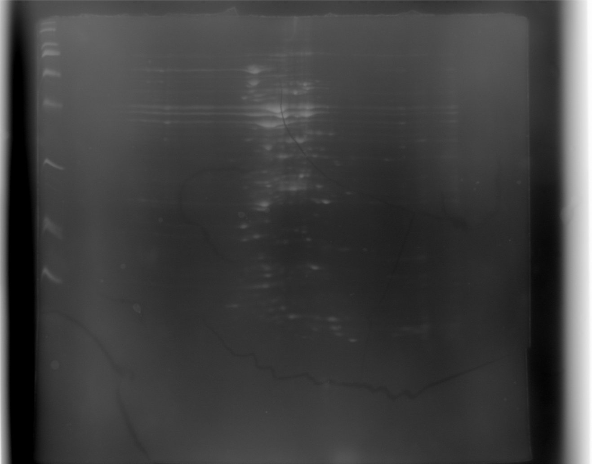
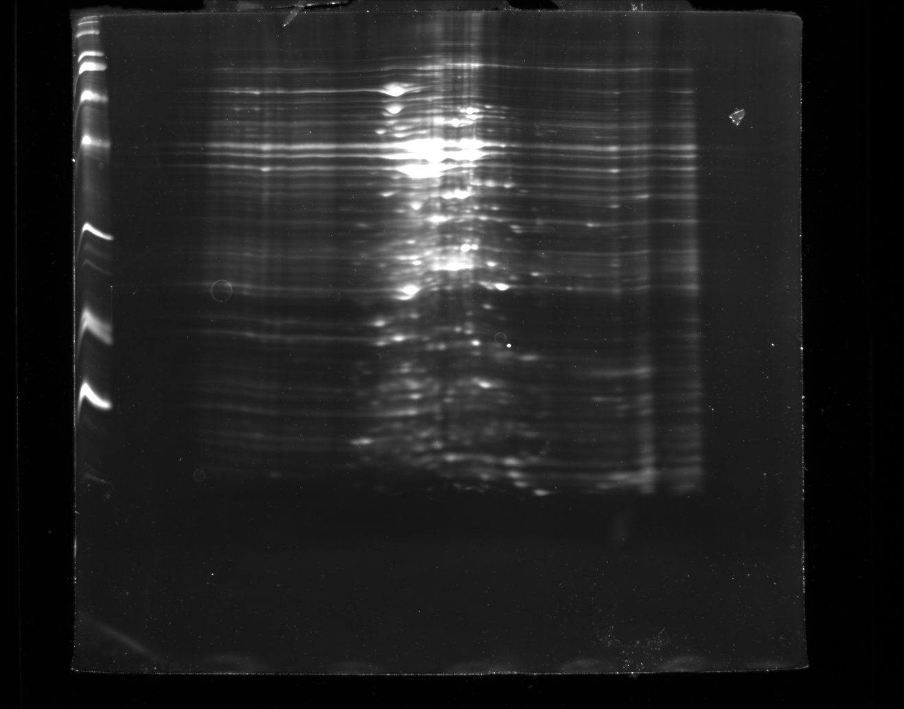
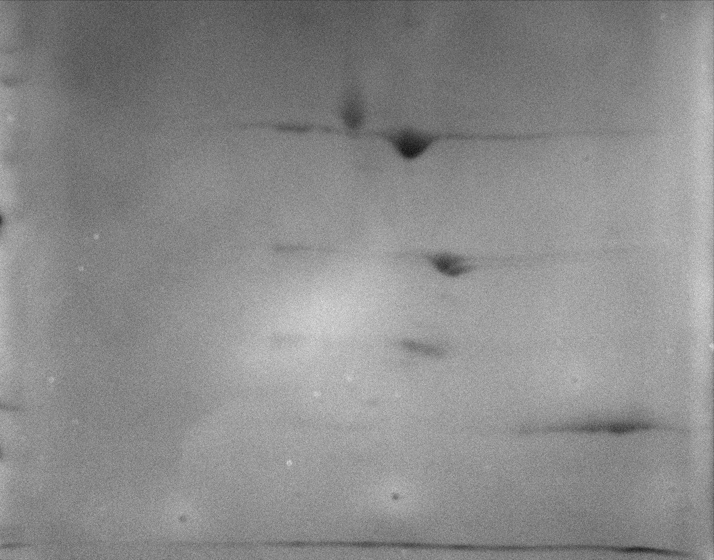
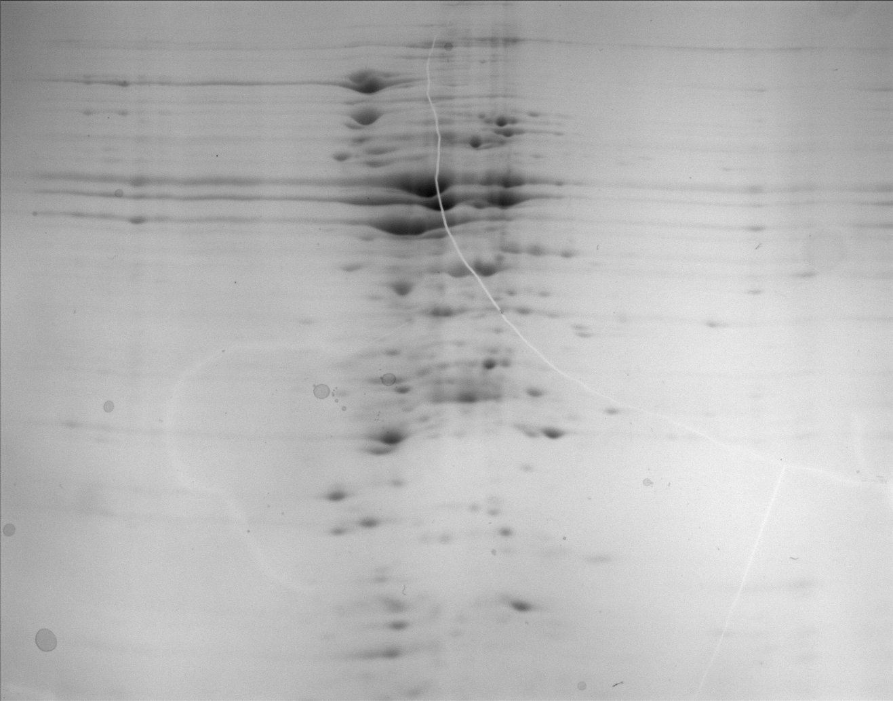
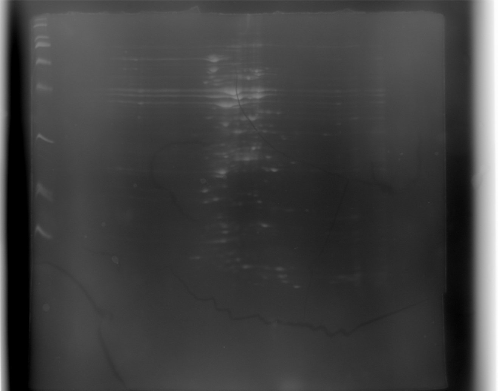
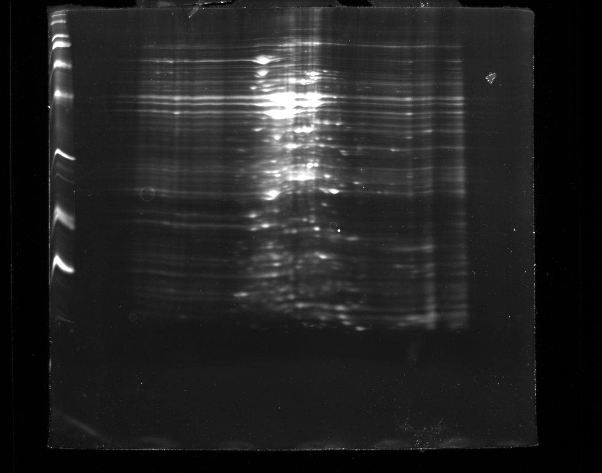